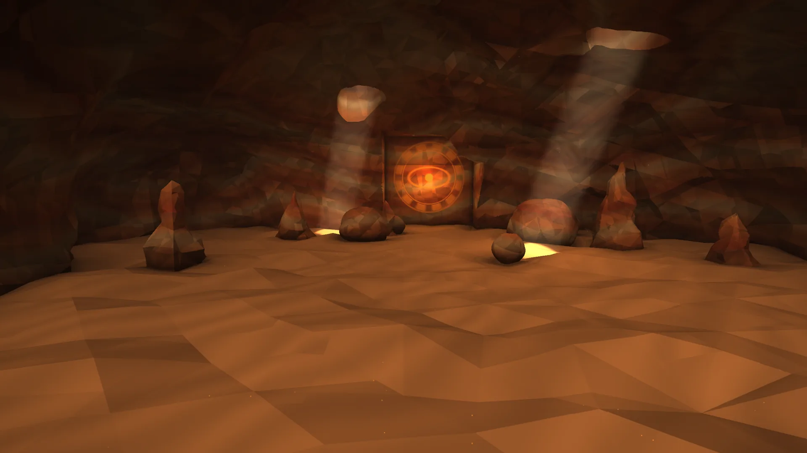
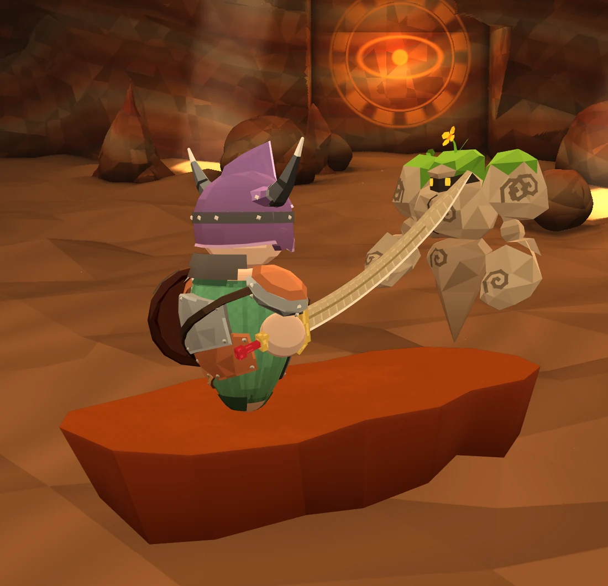

Sand Cave
Sand Cave is a place in the Red Desert Story and a region of the Endless Dungeon. A sandstone hollow past the cliffs. Rocklings and spiders in the dark, and the Sandstone Golem in his alcove.
In the Red Desert Story
The fourth of the Red Desert Story's 6 places. The Story opens once the Greenshore Story is complete.
| # | Enemy | Rank | Health |
|---|---|---|---|
| 1 | Rockling | 69 | |
| 2 | Rockling | 69 | |
| 3 | Cave Spider | 76 | |
| 4 | Sandstone Golem | Boss | 304 |
In the Endless Dungeon
A tier 9 region of the Red Desert. It opens when you clear it in the Red Desert Story.
Who you fight
| Enemy | Role | Share of ordinary fights |
|---|---|---|
| Rockling | Ordinary fight | 66.67% |
| Cave Spider | Ordinary fight | 33.33% |
| Sandstone Golem | Round boss, Warden | — |
Region chest
Its chests pay tier 3 or better, with one extra row from this list:
| Item | Quantity | Share |
|---|---|---|
 Spider Silk Spider Silk | 1–3 | 40% |
 Mithril Ore Mithril Ore | 2–4 | 30% |
 Coal Coal | 5–10 | 25% |
 Orichalcum Ore Orichalcum Ore | 1 | 5% |
Chart
 Cave Chart takes a run straight here.
Cave Chart takes a run straight here.
Diary
Its tasks, Easy to Elite: Sand Cave Diary.
Strategy
Not written yet
How to get through Sand Cave, and what to bring.
Gallery




Trivia
Not written yet
Anything else worth knowing.
Changes
Not written yet
What changed in Sand Cave, update by update.
| Locations | |
|---|---|
| Greenshore | Greenshore · Greenshore Fields · Bandit Camp · Bandit Town · Cyclops Arena · Cultist Tower · The Dump · Slime Grotto |
| The Red Desert | Dust Bowl · Sand Storm · Pyramids · Sand Cave · Research Station · Hellish Desert |